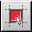

Editing Symbol Graphics
Objective
To become familiar with the steps in editing symbol graphics by using the Symbol Editor.
In this chapter, you will learn to:
Perform zoom and pan operations on a symbol
Draw graphical objects to add to a symbol
Create a group of symbol objects
Rotate an object
Align objects
Add a bitmap to a symbol
Perform move and stretch operations on symbol objects
Overview
In Part Developer, you can modify a symbol in two ways, by changing the values of various fields in the Symbol Pins panel or by modifying the symbol text and graphics on the Symbol Editor canvas. While some symbol modification tasks, such as changing the location of a pin from left to right, can be done using either the Symbol Pins panel or the Symbol Editor, some other tasks, such as adding graphics to indicate the functionality of the symbol, can be done only using the Symbol Editor. This chapter covers various Symbol Editor features, which you can use to edit symbol graphics. You will use the library part sample_part in the my_lib library.
The part sample_part has six symbols.
Performing Zoom and Pan Operations on a Symbol
Zoom in on the switch graphics associated with the PIN1 pin in sym_6. After the object has been magnified according to your specification, pan the Symbol Editor canvas to display only the PIN+ and PIN- pins.
Note: If you want to edit the graphics, first press Esc to exit the zoom mode.
To pan the canvas so that the
PIN+andPIN-pins can be viewed, click the Pan tool button .Click and release the mouse button only after the
PIN+andPIN-pins are displayed at the desired location on the Symbol Editor canvas.
 | If you are using a three-button mouse, you can pan using the middle mouse button. |
Drawing Graphical Objects to Add to a Symbol
Draw the following graphic in the sym_1 symbol of sample_part to indicate that pins PIN6, PIN1, and PIN10 are associated with a buffer and a switch.
To begin drawing the buffer, click the Add Line tool button .
Click below the
PIN6text label and drag the mouse pointer to draw a horizontal line of the desired length.To draw a straight vertical line that is bisected by one end of the
PIN6horizontal line, click at the desired location in the symbol and drag the mouse pointer vertically until the line is of the desired length.Click and drag the mouse pointer to the apex of the triangle.
To complete the buffer, click the Add Polyline tool button .
Click at the apex of the triangle and drag horizontally up to the desired length.
To draw the switch, first draw a horizontal line of the desired length below the
PIN1text label.To draw a circle at the end of the horizontal line, click the Add Circle tool button .
Click on the desired location and drag the mouse pointer to draw the diameter of the circle.
Using the Add Line tool button, draw a slanted line from the circle.
Using the Add Polygon tool button, draw a small triangle, the apex of which touches the slanted line.
Draw a horizontal line below the
PIN10text label and drag it vertically up and then horizontally left to connect to the small triangle.
| When drawing objects, you can either copy/paste or use the Make components the same width and Make components the same height tool buttons to create objects of identical dimensions. |
| To draw objects that should not be snapped to fit into the grid, make sure the Snap to Grid option is not selected. You can access this option from the Canvas menu item on the Graphic Editor menu or from the toolbar using the Snap to Grid tool button  . |
Creating a Group of Symbol Objects
In sym_1, create a group of the two pins PIN+ and PIN- so that the pins can be moved together.
To select the
PIN+pin along with its name and text label, click the pin when the mouse pointer changes to the move icon. You will notice that the same pin gets selected in the Symbol Pins panel.
| You can also select pins from the Symbol Pins panel by clicking the row number in the first column of the Logical Pins grid. This method of selection cannot be used if you want to select symbol objects other than pins. |
Rotating an Object
In the sym_2 symbol, rotate the first triangle to make it inverted.
Aligning Objects
In the sym_3 symbol, left-align the first horizontal line with the second horizontal line.
| To make a set of circles concentric, select all the circles and then click the Align Middle tool button and the Align Center tool button. |
Adding a Bitmap to a Symbol
Add the bitmap logo.bmp to the sym_4 symbol.
 .
.The path of the
logo.bmpfile is<your_work_area>/library_project/my_lib/sample_part/images. Browse themy_libfolder to select the bitmaplogo.bmpand click the Open button.To add the image, click at the desired location on the canvas.
The image is added to the symbol. You can stretch the image to increase its size.
 | Make sure that the image to be added is stored in a .bmp file or a .jpg file. |
Performing Move and Stretch Operations on Symbol Objects
Move the group of PIN+ and PIN- pins a few grid points down in the sym_5 symbol. Increase the symbol size by dragging the symbol outline.
Place the mouse pointer on either pin and drag the group to the desired location in the symbol.
To increase the length of the symbol, move the horizontal line at the base of the symbol down to the desired location.
Click the dotted line to display stretch handles and drag the middle handle until the outline merges with the horizontal line that you had moved to the new location.
| To move an object by a fraction of a grid in any direction, you can use Nudge Up, Nudge Down, Nudge Left, or Nudge Right tool buttons. |
| To move pins from one side of the symbol to another, use the Symbol Pins panel instead of the Symbol Editor. Part Developer automatically adjusts the direction of a pin when the Location column value for the pin is changed in the Symbol Pins panel. |